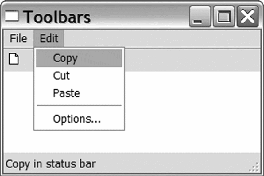

Эта глава включает:
Фондамент дома должен обеспечить надежную основу для остальных частей конструкции. Ваша wxPython программа также имеет фундамент, состоящий из двух необходимых объектов, которые поддерживают остальную часть вашего приложения. Это прикладной объект и главное окно. Используя эти объекты должным образом вы легко сможете построить остальные части вашего приложения.
В этой главе, вы будете работать с прикладным объектом, настраивая глобальные аспекты вашей программы, включая инициализацию, переадресацию вывода и завершение. Вы будете использовать различные стили окон. Вы будете также использовать простые диалоговые окна, чтобы получить информацию от пользователья. В конце главы, мы покажем как диагностировать и устранять общие проблемы при использовании прикладного объекта и главного окона.
Что нужно знать об основных объектах?
Давайте начнем с описания этих двух фундаментальных объектов. Прикладной объект управляет главным циклом обработки событий, который является сердцем вашей wxPython программы. Цикл обработки событий будет подробно обсуждаться в главе 3. Пока, достаточно сказать, что запуск главного цикла - это работа прикладного объекта. Кроме того, прикладной объект имеет последнюю возможность обработать события, которые были проигнорированы другими объектами приложения. Без прикладного объекта ваше wxPython приложение выполняться не может.
Главное окно содержит элементы интерфейса, посредством которых пользователь может управлять данными. Например, в текстовом редакторе, главное окно – отображает документ и позволяет, манипулировать фрагментами текста. Точно так же, главное окно web-браузера отображая страницу, позволяет вам управлять ею как объектом данных.
На рисунке 2.1 показана схема отношений между двумя фундаментальными объектами и остальными частями вашего приложения.
Рисунок 2.1 Схематическое изображение структуры приложения wxPython. Показаны отношениям между прикладным объектом, главным окном и циклом обработки событий
Как показано на диаграмме, прикладной объект содержит ссылку на главное окно и запускает цикл обработки событий. Главное окно управляет своими компонентами и отображаемыми данными. Компоненты окна посылают события, инициируемые пользователем. Из главного цикла вызываются обработчики событий. В следующих разделах, мы обсудим прикладной объект и главное окно более подробно.
Как создать и использовать прикладной объект?
Каждое приложение wxPython нуждается в одном прикладном объекте. Прикладной объект должен быть объектом класса wx.App или производного от него. Основная цель прикладного объекта состоит в том, чтобы управлять циклом обработки событий. Этот цикл отвечает на события посылая их соответствующим обработчикам событий. Прикладной объект настолько важен для управления процессами wxPython, что вы не сможете создать никакие другие графические объекты wxPython, пока ваша программа не создаст прикладной объект.
Базовый класс wx.App определяет также свойства, которые являются глобальными для всего приложения. Пока, это - все что вам нужно от прикладного объекта. Собственный прикладной класс может использоваться, если вы должны управлять другими глобальными данными или подключениями (например, подключением к базе данных). В некоторых случаях, вы могли бы также хотеть изменить главный цикл обработки событий для более специализированной обработки. Однако, цикл по умолчанию подойдет почти для всех приложений wxPython, которые вы напишете.
Создание вашего собственного подкласса wx.App настолько просто, что будет хорошей идеей создать его в самом начале разработки вашего приложения. Даже если вы не нуждаетесь ни в каких дополнительных функциональных возможностях. Таким образом, у вас будет подкласс, который позже вы сможете расширить. Чтобы создать и использовать подкласс wx.App, вы должны сделать четыре шага:
Мы видели метод OnInit() в главе 1. Его вызывает система wxPython, когда приложение стартовало, но главный цикл еще не запущен. Этот метод не принимает никаких параметров и возвращает логическое значение. Если возвращаемое значение False, то приложение завершится немедленно. В большинстве случаев этот метод будет возвращать True. Возврат False позволяет надлежащим образом обработать определенные ошибочные ситуации, например, отсутствие необходимого ресурса.
Поскольку метод OnInit() является частью структуры wxPython, любая инициализация, необходимая для вашего собстенного класса, обычно производится в нем, а не в конструкторе __init__. Если вы решите, что нуждаетесь, по каким-то причинам, в собстенном конструкторе __init__, не забудьте вызвать конструктор базового класса из своего конструктора:
Переключить отображение номеров строк
Как правило, вы создаете по крайней мере один объект фрейм в методе OnInit(), и вызываете метод Show() этого фрейма. Там же вы можете указать, что фрейм является главным окном приложения, вызвав метод SetTopWindow(). Главное окно используется как родительское по умолчанию для окон диалогов, которые созданы без указания родителя. Мы обсудим главное окно в разделе 2.5.
Когда можно не создавать свой подкласс wx.App
Вы не обязаны создавать ваш собственный подкласс wx.App. Такой подкласс обычно определяется для того, чтобы создать главный фрейм в методе OnInit(). Но ничего не мешает вам создать фрейм вне определения прикладного класса, например в секции __main__. Единственное условие – сначала должен быть создан объект wx.App. Вообще, это - хорошая идея тогда, когда в приложении есть только один фрейм, и определение прикладного класса тривиально. В этом случае, wxPython обеспечивает удобный класс wx.PySimpleApp. Этот класс обеспечивает простейший метод OnInit(), который определен следующим образом:
Переключить отображение номеров строк
def __init__(self, redirect=False, filename=None,
useBestVisual=False, clearSigInt=True):
wx.App.__init__(self, redirect, filename, useBestVisual,
При использовании wx.PySimpleApp программа могла бы выглядеть так:
Переключить отображение номеров строк
В первой строке этого фрагмента, вы создаете прикладной объект класса wx.PySimpleApp(). Так как мы используем класс wx.PySimpleApp, мы не имеем собственного метода OnInit, поэтому во второй строке мы создаем фрейм. Фрейм не имеет никакого определенного родителя, поэтому он счтается главным окном приложения. (Естественно, класс MyNewFrame должен быть определен где-то выше.) Третья строка делает фрейм видимым, и в последней строке запускается цикл обработки событий.
Использование wx.PySimpleApp позволяет вам выполнять вашу программу wxPython, не создавая ваш собственный прикладной класс. Но вы должны использовать wx.PySimpleApp, только если приложение достаточно простое, и не нуждается ни в каких других глобальных данных.
Соглашения по наименованиям. В то время как wxPython делает фантастическую работу по упрощению использования C++ инструментария, C++ происхождение накладывает свой отпечаток. Ярким примером наследия C++ является соглашение по наименованию методов. В Python, названия методов обычно используют стиль lower_case_ separated_by_underscores или стиль lowerCaseInterCap. Однако, в wxWidgets для методов используется стиль UpperCaseInterCap. Это может немного смущать, если вы привыкли к стилю Python. Чтобы быть последовательными, мы рекомендем вам использовать стиль wxWidgets в ваших собственных классах wxPython. (Естественно, вы должны будете его использовать при вызове методов wxWidgets).
Отметим также, что классы wxPython используют явные Get и Set методы для доступа к свойствам. Это тоже больше стиль C++, потому что большинство программ Python не определило бы специальные методы доступа для простых случаев.
Члены данных классов C++ в большинстве случаев являются частными. Для того чтобы обратиться к данным класса wxPython, вы должны использовать методы доступа. Вы не можете просто использовать название атрибута.
Время жизни прикладного объекта
Жизненный путь вашего прикладного объекта начинается при его создании и заканчивается, когда закрывается последнее окно приложения. Это не обязательно соответствует началу и окончанию сценария Python. Сценарий может выполнить некоторую работу перед созданием прикладного объекта wxPython, и может сделать последующую очистку после выхода из цикла MainLoop(). Однако, вся деятельность wxPython, должна быть выполнена в течение жизни прикладного объекта. И как мы уже упоминали, главный фрейм не может быть создан, пока не создан объект wx.App. (Это - одна из причин, почему мы рекомендуем создать главный фрейм в методе OnInit(). Это гарантирует, что прикладной объект уже существует.)
На рисунке 2.2 показано как созданный прикладной объект вызывает метод OnInit(), что позволяет создать новые оконные объекты. После OnInit(), сценарий вызывает MainLoop(), показывая, что события wxPython теперь обрабатываются. Приложение живет, обрабатывая события, пока не закрыты окна. После закрытия всех окон верхнего уровня, происходит возврат из метода MainLoop(), и прикладной объект разрушается. После этого, сценарий может закрыть любые другие подключения или освободить занятые ресурсы.
Рисунок 2.2 Главные события в жизни приложения wxPython, включая создание и разрушение прикладного объекта, а также начало и окончание сценария, который его окружает
Одна из причин, почему нужно знать о жизненном цикле приложения, заключается в том, что пока приложение активно, wxPython контролирует определенные системные функции, типа стандартных выходных потоков. Мы обсудим перенаправление стандартного вывода в следующем разделе.
Как изменить направление вывода из программы wxPython?
Все программы Python могут осуществлять вывод текста через два стандартных потока: стандартный выходной поток (sys.stdout) и поток для вывода сообщений об ошибках (sys.stderr). Обычный Python направляет стандартные выходные потоки на консоль, с которой был запущен сценарий. Однако, когда создан ваш прикладной объект, вы можете использовать wxPython для управления стандартными потоками и перенаправить вывод в окно. Такое перенаправление по умолчанию установлено для wxPython под Windows. В Unix системах, где существует окно консоли, wxPython по умолчанию не управляет стандартными потоками. Во всех системах может быть явно определено направление вывода, после создания прикладного объекта. Мы рекомендуем использовать эту особенность в своих интересах, и всегда определять направление стандартного вывода, чтобы избежать любых проблем поведения на различных платформах.
Перенаправление стандартного вывода
Если wxPython управляет стандартными потоками, то текст, посланный потокам любым из механизмов вывода (вывод оператора print или системные сообщения), будет переадресован в отдельный фрейм wxPython. Текст, посланный потокам перед созданим прикладного объекта wxPython или после его разрушения, обрабатывается как обычно. Листинг 2.1, демонстрирует жизненный цикл прикладного объекта и переназначение стандартных потоков вывода.
Листинг 2.1 Пример, показывающий переназначение выходного потока
Переключить отображение номеров строк
def __init__(self, parent, id, title):
wx.Frame.__init__(self, parent, id, title)
def __init__(self, redirect=True, filename=None):
wx.App.__init__(self, redirect, filename)
self.frame = Frame(parent=None, id=-1, title='Startup')
print >> sys.stderr, "A pretend error message"
# (1) Text redirection starts here
# (2) The main event loop is entered here
(1) В этой строке создается прикладной объект. После этой строки, весь текст, посланный в stderr или stdout может быть переадресован в фрейм wxPython. Параметр конструктора определяет, имеет ли место переназначение.
(2) При выполнении, приложение создает пустой фрейм, и дополнительно создает фрейм с переадресованным выводом, как показано на рисунке 2.3. Заметьте, что сообщения стандартных потоков направлены в окно.
Рисунок 2.3 окно stdout/stderr, созданное программой из листинга 2.1
После выполнения программы, вы увидите на своей консоли следующий вывод:
Переключить отображение номеров строк
Первая строка выведена перед открытием фреймов. Вторая строка выведена после закрытия всех фреймов.
Глядя на консоль и окно вывода, мы можем проследить жизненный цикл приложения.
Первый пункт (Script start) рисунка 2.2 cоответствует началу выполнения секции __main__. Переход к следующему пункту происходит немедленно и отмечен в листинге цифрой (1). При создании прикладного объекта вызывается метод wx.App.__init__(). Потом управление передается в OnInit(), который wxPython вызывает автоматически. Далее, программа вызывает wx.Frame.__ init__(). Наконец, управление возвращается назад в секцию __main__, где вызывается MainLoop(), что соответствует третьему пункту на рисунке 2.2. При выходе из главного цикла wxPython вызывает wx.App.OnExit(), переходя к четвертому пункту диаграммы и далее к концу сценария.
“Минуточку,” скажете вы, “сообщение OnExit() не отображалось ни в окне ни на консоли.” На самом деле сообщение действительно отображается в окне wxPython, но происходит это непосредственно перед закрытием окна, поэтому оно и не попало на скриншот.
Быстрое исчезновение сообщения OnExit() – это симптом большой проблемы связанной с фреймом вывода. Хотя это может быть полезно во время разработки, вы, скорее всего, не захотите, чтобы фрейм с ошибками выскакивал во время выполнения программы. Кроме того, если ошибка произойдет в методе OnInit(), сообщение об ошибке будет направлено в окно, но ошибка заставит приложение завершиться, так как OnInit() возвратит значение False. В результате сообщение исчезнет быстрее, чем вы его заметите.
Изменение перенаправления по умолчанию
Чтобы изменить это поведение, wxPython позволяет вам, при создании прикладного объекта, установить два параметра. Первый параметр: redirect. Вывод будет перенаправлен в окно, если присвоить ему значение True. Если значение - False, то для вывода используется консоль. Если redirect - True, то можно задать второй параметр: имя файла вывода. Если параметр задан, то весь вывод будет перенаправлен в файл, а не в окно wxPython. Поэтому, изменив строку, в которой создается wx.App в листинге 2.1:
Переключить отображение номеров строк
мы направляем весь вывод на консоль:
Переключить отображение номеров строк
Заметьте, что сообщение OnExit() здесь отображено. Изменение строки на:
Переключить отображение номеров строк
направит вывод в файл output. Причем сообщения App __init__ и after MainLoop будут все еще выводиться на консоль, потому что они происходят вне периода жизни объекта wx.App, управляющего потоками.
Как завершается приложение wxPython?
Когда пользователь закроет последнее окно верхнего уровня в вашем приложении, оно завершится. Окном верхнего уровня мы называем любой фрейм не имеющий родителя, а не только фрейм определенный методом SetTopWindow(), включая любые фреймы непосредственно созданные wxPython. Например, в листинге 2.1, приложение не завершится до тех пор пока и главный фрейм и фрейм переназначения вывода не будут закрыты. Несмотря на то, что только главный фрейм зарегистрирован, используя SetTopWindow(), и даже несмотря на то, что приложение явно не создает окно вывода. Чтобы вызывать завершение программы, вы должны вызвать метод Close() для всех окон верхнего уровня.
Управление нормальным завершением
В процессе завершения, wxPython заботится об удалении всех окон и освобождении ресурсов. Но вы имеете возможность выполнить собственную очистку в процессе выхода. Метод OnExit() вашего подкласса wx.App вызывается после закрытия последнего окна, но перед внутренней очисткой wxPython. Вы можете использовать этот метод, чтобы очистить любые не-wxPython ресурсы, которые вы создали сами (например, подключения к базе данных). Метод OnExit() вызывается, даже если приложение закрыто с использованием wx.Exit().
Если, по каким-то причинам, вы хотите, чтобы приложение продолжалось после закрытия всех окон, Вы можете изменить поведение по умолчанию, используя метод wx.App.SetExitOnFrameDelete(flag). Если параметр flag будет установлен в False, то программа продолжит выполняться даже после закрытия последнего окна. Это означает, что объект wx.App продолжит существовать, главный цикл продолжит обрабатывать события. После этого вы могли бы, например, создать новые окна верхнего уровня. Приложение будет жить до тех пор, пока явно не вызовет глобальную функцию wx.Exit().
Еще одна тонкость. wxPython не начнет процесс завершения прежде, чем будет запущен главный цикл. Поэтому, если вы открываете диалог в вашем методе OnInit(), вы можете закрыть его без опасения, что wxPython интерпретирует это как закрытие последнего окна и завершит приложение.
Управление аварийным завершением
Вы не всегда можете закрыть вашу программу обычным способом. Иногда, вы должны завершить приложение немедленно, не забтясь о полной очистке ресурсов. Например, критический ресурс закрылся или стал недоступен. Если приложение закрывает система, вы не можете сделать всю необходимую очистку.
Есть два механизма для выхода из приложения wxPython в чрезвычайной ситуации. Вы можете вызвать метод ExitMainLoop() класса wx.App. Этот метод прерывает главный цикл, заставляя передать управление из функции MainLoop() далее. Это эквивалентно закрытию всех окон верхнего уровня.
Вы можете также вызвать функцию wx.Exit(). Ни один из этих методов не рекомендуется для нормального завершения приложения, потому что некоторые функции очистки могут быть пропущены.
Иногда, ваше приложение должно завершится из-за внешнего события. Например, когда операционная система перезагружается или собирается отключить пользователя. В этом случае, ваше приложение должно отреагировать на это сохранив документы, завершив соединение с базой данных или еще как-нибудь. Если в вашем приложении есть обработчик связанный с событием wx.EVT_QUERY_END_SESSION, то он будет вызван, когда wxPython придёт сообщение, что пора выключаться. (Мы покажем, как связать события с обработчиками позже в этой главе, и более подробно в главе 3.) Параметром события в данном случае будет wx.CloseEvent. Событие выключения даёт право приложению отменить выключение, для того, чтобы проверить эту возможность используйте метод CanVeto(). О своём решении отменить завершение работы приложение может сообщить, вызвав метод Veto(). Вы можете использовать его, если у Вас не получается успешно сохранить или закрыть все ресурсы. Обработчик по умолчанию для события wx.EVT_QUERY_END_SESSION вызывает метод Close() для всех окон верхнего уровня, которые в свою очередь посылают событие wx.EVT_CLOSE окнам верхнего уровня, что даёт Вам ещё одну возможность контролировать процесс завершения работы. Если любой метод Close() возвращает False тогда, приложение пытается запретить выключение системы.
Как создать и использовать окно верхнего уровня?
Окно верхнего уровня – это виджет (обычно это фрейм), который не содержится ни в каком другом виджете вашего приложения. Указав на него, обычный пользователь скажет: “Это - программа”. Окно верхнего уровня обычно является главным окном вашего приложения. Оно содержит виджеты интерфейса, с которыми взаимодействует пользователь. Как мы уже говорили, выход из приложения происходит, когда закрываются все окна верхнего уровня.
Ваше приложение должно иметь по крайней мере одно окно верхнего уровня. Обычно это объект класса производного от wx.Frame, хотя это может быть и подкласс wx.Dialog. Большую часть времени, вы будете определять собственные подклассы wx.Frame для использования в вашем приложении. Однако, есть множество предопределенных подклассов wx.Dialog, которые обеспечивают стандартные диалоги для вашего приложения.
Окно верхнего уровня – это любой виджет в вашем приложении, который не связан с родительским контейнером. Ваше приложение должно иметь по крайней мере одно такое окно, Но, в принципе, в приложении может быть столько таких окон, сколько вам нужно. Однако, только одно из этих окон может быть обявлено главным используя метод SetTopWindow(). Если вы не определите главное окно при помощи SetTopWindow, то главным считается фрейм верхнего уровня, который создан первым. Таким образом, явное определение главного окна не всегда необходимо. Вы не нуждаетесь в нем если, например, у вас только одно окно в приложении. Повторный вызов SetTopWindow() заменят текущее главное окно, так как приложение может иметь только одно главное окно одновременно.
То, что бычный пользователь GUI назвал бы окном, в терминологии wxPython называается фрейм. То есть фрейм – это контейнер, который пользователь может перемещать по экрану, и который включает такие элементы оформления как заголовок, строка меню и др. Класс wx.Frame - базовый класс всех фреймов в wxPython. Есть также несколько специализированных подклассов wx.Frame, которые вы можете использовать. Этот раздел даст краткий обзор класса wx.Frame — достаточный для того, чтобы начать его использовать. Более полное описание класса wx.Frame будет представлено в главе 8.
Когда вы создаете подклассы wx.Frame, метод __init__(), вашего класса должен вызвать конструктор базового класса wx.Frame.__init__(). Конструктор имеет следующие параметры.
Переключить отображение номеров строк
wx.Frame(parent, id=-1, title="", pos=wx.DefaultPosition,
size=wx.DefaultSize, style=wx.DEFAULT_FRAME_STYLE,
Большинство параметров имеют разумные значения по умолчанию. Мы будем встречать параметры, подобные этим и в других конструкторах виджетов — это типичный набор параметров в wxPython. Таблица 2.1 описывает каждый из параметров.
Таблица 2.1 Параметра конструктора wx.Frame
|
Параметр |
Описание |
|
Родительское окно создаваемого фрейма. Для окон верхнего уровня, значение - None. Если в качестве родительского указать другое окно, то новый фрейм будет принадлежать этому окну и удален разрушен при удалении родителя. В случае создания дочернего окна MDI, новое окно ограничено родительским окном и может перемещаться и изменять размеры только в пределах рабочей области родителя. | |
|
Идентификатор (ID) wxPython для нового окна. Вы можете задать его явно, или указать значение -1, которое заставит wxPython автоматически создать новый ID. Для получения дополнительной информации cм. раздел “Работа с ID в wxPython”. | |
|
Текст заголовка окна. | |
|
Объект wx.Point, определяющий, в какой точке экрана расположен левый верхний угол нового окна. Как обычно в графических приложениях, (0, 0) – это левый верхний угол экрана монитора. Значение по умолчанию - (-1, -1), заставляет операционную систему выбрать место расположения окна. Для получения дополнительной информации cм. раздел “Работа с wx.Size и wx.Point”. | |
|
Объект wx.Size, определяющий начальные размеры окна. Значение по умолчанию - (-1, -1), заставляет систему определять начальные размеры. Для получения дополнительной информации cм. раздел “Работа с wx.Size и wx.Point”. | |
|
Битовая маска констант, определяющих стиль окна. Вы можете использовать оператор поразрядное или (|), чтобы объединить их. Рекомендации по использованию см. в разделе “Работа со стилями wx.Frame”. | |
|
Внутреннее название для фрейма, используемое в системе Motif, чтобы установить значения ресурса. Может также использоваться, чтобы найти окно по имени. |
Обратите внимание, это параметры базового конструктора wx.Frame.__init__(). Список параметров конструктора вашего класса может быть другим. Это позволяет гарантированно установить значения по умолчанию для вашего собственного фрейма. Например, если бы вы хотели, чтобы ваш фрейм всегда был квадратом 300 на 300 пикселей, конструктор вашего класса не имел бы параметра size и явно задавал бы размер фрейма. В листинге 2.2 показан класс фрейма, который не позволяет ни одному из атрибутов окна быть переданным как параметр.
Листинг 2.2 Подкласс wx.Frame, который устанавливает собственные значения по умолчанию
Переключить отображение номеров строк
wx.Frame.__init__(self, None, -1, "My Friendly Window",
В листинге 2.2, метод __init__() класса MyFrame не принимает никаких параметров. Это означает, что пользователи MyFrame не могут переопределить жестко заданные аргументы, которые MyFrame.__init__() передает в конструктор базового класса. Хотя, решительный пользователь вашего класса может изменить эти значения, вызывая set-методы, после того, как фрейм создан.
Работа с идентификаторами в wxPython
В таблице 2.1 упоминается идентификатор ID для нового фрейма. ID – это атрибут всех виджетов в wxPython, поэтому необходимо четко представлять себе как они работают. Каждый виджет в приложении wxPython имеет свой идентификатор. Идентификаторы должны быть уникальными в пределах одного фрейма. Однако, мы рекомендуем, чтобы ваши идентификаторы были уникальными во всем приложении. Это предотвратит ошибки и беспорядок при обработке событий. Хотя, есть предопределенные стандартные ID, которые будут повторяться в вашем приложении (например, wx.ID_OK и wx. ID_CANCEL является идентификаторами кнопок OK И Cancel в диалоговом окне). Обычно повторное использование стандартных идентификаторов не вызывает проблем в вашем приложении, пока вы используете их стандартным образом. ID - обычно второй параметр в конструкторе виджета wxPython, после параметра parent. Самое важное, при использовании ID, это создать уникальную связь между событием и функцией, которая вызывается для обработки этого события. Если ID дублируются, возможен вызов не той функции для обработки события.
Есть три способа создания идентификатора виджета:
Явный выбор ID
Вы можете явно передать целое положительное число в конструктор, и это число станет идентификатором виджета. При этом вы сами должны отслеживать не дублируются ли ID в пределах фрейма, или используйте одну из предопределенных констант. Вы можете проверить, не используется ли ваш явный ID в другом месте приложения, вызвав функцию wx.RegisterId(). При явном задании ID, вы должны использовать числа из диапазона, ограниченного константами wx.ID_LOWEST и wx.ID_HIGHEST.
Использование функции NewID()
Однако, обеспечение уникальности чисел ID может быстро стать обременительным. Вместо этого вы можете поручить wxPython создавать идентификаторы, использовав функцию wx.NewId():
Переключить отображение номеров строк
frame = wx.Frame.__init__(None, id)
Использование константы
Многие конструкторы принимают в качестве параметров константы wx.ID_ANY или -1, что заставляет wxPython генерировать новый ID автоматически. Чтобы узнать значение ID используйте метод GetId():
Переключить отображение номеров строк
frame = wx.Frame.__init__(None, -1)
Между этими стилями нет никакого функционального различия.
В списке параметров конструктора wx.Frame (таблица 2.1) упоминаются классы wx.Size и wx.Point. Эти два класса используются очень часто при программировании в wxPython, поэтому эти классы были немного доработаны.
Классы wx.Size и wx.Point очень похожи. Класс wx.Point представляет точку или позицию. Конструктор принимает два параметра: координаты x и y. Значения по умолчанию для обоих параметров – нуль.
Переключить отображение номеров строк
Чтобы установить обе координаты в одной строке, используйте функцию Set(x, y). Чтобы получить координаты, используйте метод Get(), который возвращает два значения как кортеж Python. В отличие от большинства wxWidgets классов, координаты точки wx.Point доступны и по отдельности как простые атрибуты Python:
Переключить отображение номеров строк
2 y = point.y
Кроме того, для объектов wx.Point определены операции сложения, вычитания и сравнения точно так же, как для других объектов Python. Например:
Переключить отображение номеров строк
2 y = wx.Point(5, 7)
3 z = x + y
4 bigger = x > y
В классе wx.Point координаты - это целые числа. Если вы нуждаетесь в координатах с плавающей запятой, можете использовать класс wx.RealPoint, который работает почти так же как wx.Point.
Класс wx.Size почти идентичен wx.Point, за исключением того, что переменные объекта называются width и height вместо x и y.
Когда объект wx.Point или wx.Size понадобится где-нибудь в вашей программе, например в конструкторе для другого объекта, вы не обязаны создавать объект явно. Вместо этого вы можете передать конструктору кортеж Python, а wxPython неявно создаст объект wx.Size или wx.Point:
Переключить отображение номеров строк
1 frame = wx.Frame(None, -1, pos=(10, 10), size=(100, 100))
Это работает не только в конструкторах, но и везде где ожидаются объекты wx.Point или wx.Size. Вы даже можете написать что-то типа этого:
Переключить отображение номеров строк
Конструктор wx.Frame принимает в качестве параметра стиля битовую маску. Каждый виджет wxPython может принимать подобный параметр стиля, хотя его значения различны для каждого типа виджетов. В этом разделе рассматриваются стили, используемые для фреймов. По крайней мере часть этого описания будет применима и к другим виджетам wxPython. Во второй части книги обсуждаются стили для других типов виджетов.
Что такое битовая маска?
Битовая маска - это способ компактного хранения информации о системных признаках. Она является особенно полезной, когда есть ограниченное число признаков с булевскими значениями, и значения взаимно независимы. В wxPython всюду используются битовые маски, для управления множеством различных атрибутов.
Каждому атрибуту соответствует константа. Константа имеет значение равное степени двойки, как бы включая один бит в двоичном представлении. Значение битовой маски – это сумма всех признаков, которые "включены". Таким образом, каждый признак соответствует единственному биту в полной сумме, позволяя весь набор признаков сохранить в единственном целом числе. Например, если признак a=1 (двоичное 0001), b=2 (0010), c=4 (0100), и d=8 (1000), то любая комбинация этих чисел имеет уникальную сумму, которая может быть сохранена в целом числе. Сумма a и c равна 5 (двоичное 0101), в то же время сумма b, c, и d будет 14 (двоичное 1110). В wxPython, все признаки имеют символические константы.
Определить стиль для всех виджетов wxPython можно, передавая битовую маску в параметре style конструктора. Некоторые виджеты имеют метод SetStyle(), который позволяет изменить стиль уже после того, как виджет создан. Все индивидуальные элементы стиля, имеют предопределенные константы (например, wx.MINIMIZE_BOX). Чтобы комбинировать стили, вы можете использовать оператор поразрядное ИЛИ ( | ). Например, константа wx.DEFAULT_FRAME_STYLE определена как комбинация таких стилевых элементов:
Переключить отображение номеров строк
wx.MAXIMIZE_BOX | wx.MINIMIZE_BOX | wx.RESIZE_BORDER |
wx.SYSTEM_MENU | wx.CAPTION | wx.CLOSE_BOX
Чтобы исключить биты из составного стиля, используйте оператор XOR ( ^ ). Например, чтобы создать окно, со стилем по умолчанию, размеры которого нельзя изменять, вы могли бы сделать так:
Переключить отображение номеров строк
wx.DEFAULT_FRAME_STYLE ^ (wx.RESIZE_BORDER | wx.MINIMIZE_BOX |
Настоятельно рекомендуем использовать стиль по умолчанию для фреймов верхнего уровня, чтобы пользователь мог легко распознать их. По крайней мере, вы должны гарантировать, что есть некий способ закрыть окно верхнего уровня. Легче всего это сделать, включив в стиль константу wx.SYSTEM_MENU. Также знайте, что, неосторожно используя операцию AND (&), вместо OR, вы можете получить фрейм без рамки, который нельзя перемещать, и у которого нельзя изменить размеры. Это, конечно, не рекомендуется.
В таблице 2.2 приведен список самых важных стилей для wx.Frame.
Таблица 2.2 Наиболее часто используемые параметры стиля для wx.Frame
|
Стиль |
Описание |
|
Позволяет отображать заголовок фрейма. | |
|
Позволяет отображать кнопку Закрыть в области заголовка окна. А также делает доступным соответствующий пункт системного меню. | |
|
Значение по умолчанию, определено как: wx.MAXIMIZE_BOX | wx.MINIMIZE_BOX | wx.RESIZE_BORDER | wx.SYSTEM_MENU | wx.CAPTION | wx.CLOSE_BOX. | |
|
Фреймы, созданные с этим стилем могут использовать метод SetShape(), чтобы создать окно непрямоугольной формы. | |
|
Создается окно с областью заголовка, меньшей, чем у нормального окна. Под Windows фрейм, созданный с этим стилем не показывается в панели задач всех открытых окон. | |
|
Позволяет окну быть развернутым на весь экран, добавляя соответствующую кнопку в область заголовка, и делая доступным соответствующий пункт системного меню. | |
|
Позволяет окну быть свернутым, добавляя соответствующую кнопку в область заголовка, и делая доступным соответствующий пункт системного меню. | |
|
Позволяет изменять размеры фрейма. | |
|
Простая рамка без художественного оформления. Возможно, не воздействует на все платформы. | |
|
Добавляет системное меню к фрейму. Возможность изменять размеры и доступность других операций этого меню зависит от стилей wx.MAXIMIZE_BOX, wx.MINIMIZE_BOX и wx.CLOSE_BOX. |
На следующих четырех рисунках показаны некоторые стили фрейма.
Рисунок 2.4 Фрейм, созданный со стилем по умолчанию
Рисунок 2.5 Фрейм с неизменяемыми размерами. Заметьте отсутствие кнопок minimize/maximize.
Рисунок 2.6 Фрейм панели инструментов, с меньшей областью заголовка и без системного меню
Рисунок 2.7 Фрейм с кнопкой справки
На рисунке 2.7 используется расширенный стиль wx.help.FRAME_EX_CONTEXTHELP, который описан в главе 8.
Теперь, когда мы посмотрели, как создавать объекты wx.Frame, мы покажем, как сделать их полезными, добавляя дополнительные виджеты на фрейм.
Как поместить виджеты на фрейм?
Мы описали, как создать объекты wx.Frame, но пока еще фреймы не очень интересны, потому что они пусты. В этом разделе, мы покажем как добавить объекты и подокна к вашему фрейму, чтобы пользователь мог с ним взаимодействовать.
На рисунке 2.8 показан фрейм InsertFrame. Если нажать кнопку Close, окно закроется, и приложение завершится.
Рисунок 2.8 Окно InsertFrame - пример, демонстрирующий основы вставки элементов в фрейм.
В листинге 2.3 показано определение подкласса wx.Frame, изображенного на рисунке 2.8. Не все понятия были рассмотрены ранее, поэтому некоторые вещи могут быть не ясны.
Листинг 2.3 Код для InsertFrame
Переключить отображение номеров строк
def __init__(self, parent, id):
wx.Frame.__init__(self, parent, id, 'Frame With Button',
# (2) Adding the button to the panel
button = wx.Button(panel, label="Close", pos=(125, 10),
# (3) Binding the button click event
self.Bind(wx.EVT_BUTTON, self.OnCloseMe, button)
# (4) Binding the window close event
self.Bind(wx.EVT_CLOSE, self.OnCloseWindow)
def OnCloseWindow(self, event):
frame = InsertFrame(parent=None, id=-1)
Метод __init__() класса InsertFrame создает два объекта (1), (2). Первый - wx.Panel, который по существу является простым контейнером для других объектов, и имеет немного собственных функциональных возможностей. Второй - wx.Button, который является обычной кнопкой. Затем, события кнопки и закрытия окна сывязываются с соответствующими обработчиками (3), (4).
В большинстве случаев, создается единственный объект wx.Panel такого же размера как рабочая область окна, чтобы хранить все содержимое вашего фрейма. Делая так, мы отделяем содержание окна от других элементов, типа панели инструментов и строки состояния. Кроме того, в операционной системе Windows, цвет фона wx.Frame по умолчанию не стандартен (он серый, а не белый), в то время как wx.Panel будет иметь белый фон по умолчанию (предполагается, что вы не изменяли системные цвета и параметры настройки темы). Класс wx.Panel также позволяет создавать закладки.
Если вы знакомы с другими наборами инструментов UI, может казаться странным, что вы не должны явно вызывать добавляющий метод, чтобы вставить объект в родительский контейнер. Вместо этого в wxPython вы просто передаете ссылку на родительское окно при создании, и объект неявно добавляется в родительский объект, как показано в листинге 2.3.
Вы могли бы также спросить, почему wx.Button в листинге 2.3 создан с явной заданной позицией и размером, в то время как wx.Panel - нет. В wxPython, если фрейм имеет единственное дочернее окно, то это дочернее окно (в данном случае, wx.Panel) автоматически заполняет всю рабочую область фрейма. Это автоматическое изменение размеров отменит любую заданную позицию или размеры дочернего объекта. Даже если бы позиция или размер были определены для панели, они бы игнорировались. Автоматическое изменение размеров определено только для единственного элемента фреймов и диалогов. Кнопка является дочерним элементом панели, не фрейма, поэтому используются ее размер и позиция. Если бы размер и позиция не были бы определены для кнопки, то она поместилась бы в позицию по умолчанию, которая является верхним левым углом панели, а ее размер был бы установлен в соответствии с длиной метки.
Явное определение размера и позиции каждого элемента, довольно быстро может стать утомительным. И, что более важно, оно не позволяет вашему приложению изменять параметры объектов, когда пользователь изменяет размеры окна. Чтобы решить обе эти проблемы, wxPython использует объекты, названные sizers, чтобы управлять сложным размещением дочерних окон. Об использовании sizers будет кратко рассказано в главе 7 и более подробно в части 2.
Добавление строки меню, панели инструментов и строки состояния к фрейму
Обычно, окно приложения имеет в своем составе следующие элементы: главное меню, панель инструментов и строку состояния. wxPython обеспечивает специальные сокращенные методы для создания панелей инструментов и строк состояния. На рисунке 2.9 показан типовой фрейм с главным меню, панелью инструментов и строкой состояния.

Рисунок 2.9 Типовой фрейм с главным меню, панелью инструментов и строкой состояния
В листинге 2.4 показан метод __init__(), который украшает простое окно этими тремя элементами. И снова повторим, что это только краткий обзор, более подробно эти классы будут рассмотрены в главе 7.
Листинг 2.4 Создание фрейма Toolbars
Переключить отображение номеров строк
def __init__(self, parent, id):
wx.Frame.__init__(self, parent, id, 'Toolbars',
panel.SetBackgroundColour('White')
statusBar = self.CreateStatusBar()
toolbar = self.CreateToolBar()
# (3) Adding a tool to the bar
toolbar.AddSimpleTool(wx.NewId(), images.getNewBitmap(),
# (4) Preparing the toolbar for display
# (5) Creating two individual menus
menuBar.Append(menu1, "&File")
# (6) Creating individual menu items
menu2.Append(wx.NewId(), "&Copy", "Copy in status bar")
menu2.Append(wx.NewId(), "C&ut", "")
menu2.Append(wx.NewId(), "Paste", "")
menu2.Append(wx.NewId(), "&Options...", "Display Options")
# Attaching the menu to the menubar
menuBar.Append(menu2, "&Edit")
# Attaching the menubar to the frame
frame = ToolbarFrame(parent=None, id=-1)
(1) В этой строке создается строка состояния, которая является объектом класса wx.StatusBar. Этот элемент располагается внизу фрейма. Его ширина равна ширине фрейма, а высота определена операционной системой. Параметры шрифта строки состояния также установливаются операционной системой.
(2) Создается объект wx.ToolBar, который является контейнером кнопок, и автоматически располагается в верхней части фрейма.
(3) Существует два метода для добавление элементов на панель инструментов. В этой строке использован метод AddSimpleTool() с меньшим количеством параметров. Параметры: ID, bitmap (картинка), короткий текст справки, который отображается как tooltip и более длинный текст справки, который будет отображен в строке состояния. Хотя инструмент панели инструментов похож на кнопку, в плане обработки событий, он ведет себя больше как пункт меню. Нажим кнопки панели инструментов должен вызывать тот же метод, что и соответствующий пункт меню.
(4) Метод Realize() вычисляет координаты расположения элементов на панели.
(5) Создается объект wx.Menu. Главное меню состоит из двух пунктов.
(6) Создаются индивидуальные пункты меню, с параметрами, представляющими ID, текст элемента, и текст подсказки, отображаемый в строке состояния. Символ «&» указывает символ, который будет выбран для акселератора пункта меню.
В дополнение к использованию виджетов в ваших фреймах, вы будете также общаться с пользователями через стандартные диалоги.
Как использовать стандартные диалоги?
Библиотека wxPython обеспечивает богатый набор предопределенных диалоговых окон, которые вы можете использовать в своих приложениях. В этом разделе, мы обсудим три основных типа диалогов:
В wxPython есть много других стандартных диалогов, включая выбор файла, выбор цвета, выбор шрифта и др. Все они будут рассмотрены в главе 9.
Вывод сообщения Основной механизм для общения с пользователем - wx.MessageDialog, который является простым окном предупреждения. wx.MessageDialog может использоваться как для простого сообщения с кнопкой OK, так и для диалога Да/Нет. Следующий фрагмент показывает диалог Да/Нет:
Переключить отображение номеров строк
dlg = wx.MessageDialog(None, 'Is this the coolest thing ever!',
'MessageDialog', wx.YES_NO | wx.ICON_QUESTION)
Результирующий диалог показан на рисунке 2.10. Конструктор диалога имеет следующие параметры:
Переключить отображение номеров строк
wx.MessageDialog(parent, message,
где parent - родительское окно, или None. Параметр message - строка, которая появляется в диалоге, и caption - строка, которая появляется в заголовке диалога. Параметр style – битовая маска, которая определяет какие кнопки и значки отобразятся в диалоге. Параметр pos принимает wx.Point или кортеж Python, и позволяет вам определять позицию диалога на экране.
Рисунок 2.10 Диалог типа Да/Нет
Метод ShowModal() отображает диалог как модальный фрейм. Это значит, что никакое другое окно в приложении не ответит на пользовательские события, пока диалог не закрыт. Этот метод применим ко всем диалогам. Возвращаемое значение ShowModal() - целое число, показывающее результат диалога. В данном случае, результат соответствует кнопке, нажатой пользователем. Для wx.MessageDialog, это будет одна из следующих констант: wx.ID_YES, wx.ID_NO, wx.ID_CANCEL или wx.ID_OK.
Битовая маска стиля может быть комбинацией констант для управления отображаемыми кнопками. Используются константы: wx.OK, wx.CANCEL и wx.YES_NO. Биты стиля могут также использоваться, чтобы установить значок, отображенный на окне. Используются константы: wx.ICON_ERROR, wx.ICON_EXCLAMATION, wx.ICON_INFORMATION и wx.ICON_QUESTION.
Ввод строки текста
Если вы должны получить единственную строку текста от пользователя, то вы можете использовать класс wx.TextEntryDialog. Этот фрагмент создает диалог, и получает введенное значение, если пользователь выбрал кнопку OK:
Переключить отображение номеров строк
dlg = wx.TextEntryDialog(None, "Who is buried in Grant's tomb?",
if dlg.ShowModal() == wx.ID_OK:
Этот диалог показан на рисунке 2.11.
Рисунок 2.11 Диалог для ввода строки текста
Параметры конструктора wx.TextEntryDialog следующие: родительское окно, текстовая подсказка в окне, заголовок и значение по умолчанию для строки ввода (по умолчанию пустая строка). Есть также параметр style, который по умолчанию имеет значение wx.OK | wx.CANCEL. Вы можете использовать признак стиля, чтобы отобразить диалог без кнопки отмены, передавая только значение wx.OK. Метод ShowModal() возвращает ID нажатой кнопки. Метод GetValue() позволяет получить значение, введенное пользователем (есть параллельный метод SetValue(), который позволяет изменять строку ввода из программы).
Выбор из списка
Если вы хотите ограничить выбор пользователя значениями из списка, вы можете использовать класс wx.SingleChoiceDialog. Например, вот так:
Переключить отображение номеров строк
dlg = wx.SingleChoiceDialog(None,
'What version of Python are you using?',
['1.5.2', '2.0', '2.1.3', '2.2', '2.3.1'])
if dlg.ShowModal() == wx.ID_OK:
response = dlg.GetStringSelection()
На рисунке 2.12 показано получившееся диалоговое окно. Параметры подобны диалогу для ввода текста, за исключением того, что вместо строки по умолчанию передается список строк, которые будут отображены. Выбор пользователя можно получить двумя методами. Метод GetSelection() возвращает индекс выбранной строки, в то время как GetStringSelection() возвращает текст выбранной строки.
Рисунок 2.12 Окно SingleChoiceDialog позволяет пользователю выбирать из предопределенного списка
Распространенные ошибки при работе с прикладными объектами и фреймами
Есть несколько ошибок, которые могут произойти при создании прикладного объекта или окна верхнего уровня, которые трудно обнаружить, особенно если вы видите ошибку впервые. Сообщения о таких ошибках не обязательно полностью соответствует описанию фактической проблемы. Такие ошибки трудно диагностировать. Это довольно общие ошибки для новых программистов wxPython.
Вот – список неисправностей для некоторых самых общих случаев:
Симптом: При запуске в сообщении об ошибке говорится “unable to import module wx.” Причина: Модуль wxPython не находится в вашем PYTHONPATH. Это означает, что wxPython мог быть не правильно установлен. Возможно на вашей системе установлена больше чем одна версия Python и wxPython был установлен для той версии, которую вы не используете. Решение: Вероятно вам нужно будет установить или переустановить wxPython. Если wxPython правильно установлен, то он помещает себя в каталог <python-home>/Lib/site-packages.
Симптом: Крах приложения при запуске. Причина: Объект wxPython создан или используется перед созданием wx.App. Решение: Создайте объект wx.App немедленно при старте вашего сценария.
Симптом: Мои окна верхнего уровня создаются и немедленно закрываются. Приложение завершается. Причина: Не вызван метод MainLoop(). Решение: Вызвать метод MainLoop() после всех начальных установок.
Симптом: Мои окна верхнего уровня создаются и немедленно закрываются. Приложение завершается, но я действительно вызывал метод MainLoop (). Причина: Ошибка в вашем приложении в методе OnInit(), или в методе, вызванном из него (например, метод frame.__init__(). Решение - Ошибка перед методом MainLoop() может вызвать исключение, которое завершит программу. Если вы переадресуете стандартный вывод в окно, то окно быстро закроется, и вы не увидети сообщение об ошибке. Создайте ваш прикладной объект с redirect=False, это позволит вам увидеть сообщение об ошибках. См. раздел “Переадресация стандартного вывода”.